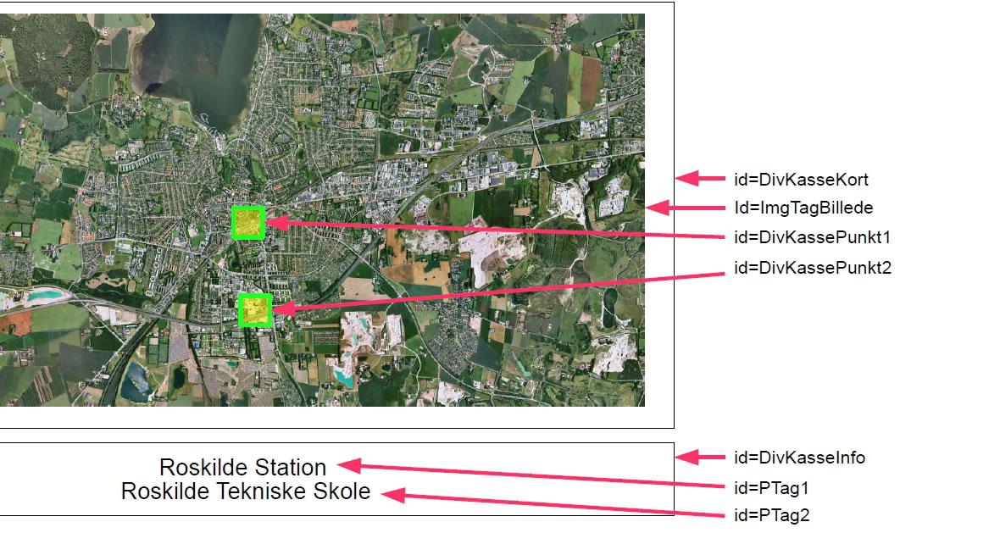
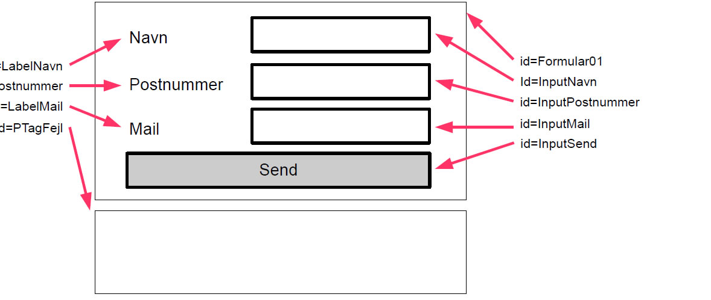

Du skal nu lave et interaktivt kort, et galleri, formularvalidering og en dropdownmenu med Javascript. Selve grundopgaverne skulle du gerne kunne løse, ved at nøjes med bare at følge opgavebeskrivelserne.
Den første Javascript opgave bygger på det simple princip at en hændelse sætter gang i noget andet. Dette princip kan bruges til at lave mange forskellige ting på en webside. Et interaktivt kort er et kort over noget, såsom et verdenskort, bykort eller lignende, hvor der, når man holder musen over eller klikker på en del af kortet, vises noget information et andet sted.
Lav først en ny tom HTML side og en tilhørende CSS fil, inden at du går i gang med at sætte det interaktive kort op.
I denne opgave skal der, for at holde sammen på det interaktive kort, først i HTML'en laves en div kasse, som så skal indeholde et img tag med et billede af et bykort og to små div kasser med en gennemsigtig baggrundsfarve, der er positioneret forskellige steder oven på billedet.
Derudover skal der være en div kasse under det interaktive kort, hvor informationen om de to punkter vises, når man holder musen over punkterne. Inde i informations-div-kassen skal der placeres to p tags i midten med hver deres information. Du må selv bestemme hvilket billede du vil bruge, hvordan udseendet skal være og hvad der skal stå i de to p tags i informations-div-kassen.
Selve opsætningen gøres naturligvis kun med HTML og CSS og forklares ikke yderligere, da det antages at du allerede kan dette i HTML og CSS.
Opsætningen skal være på følgende måde:
 Hent billede her.De to p tags skal ikke vises til at starte med, så skjul disse to med display egenskaben sat til none i CSS'en.
Efter at alt HTML'en og CSS'en er lavet, er du nu klar til at tilføje en Javascript fil i head tagget på websiden med det interaktive kort, som forklaret først i kompendiet i afsnittet "Indsættelse af Javascript".
Det javascript du skal bruge for at få kortet til at blive interaktivt er hændelser, funktioner og DOM.
Skift nu over til den Javascript fil som du har tilføjet og begynd med at sætte hændelserne op.
Først skal der være en hændelse, der går i gang når websiden er indlæst. Denne hændelse sørger for at alle de hændelser, der skal være for de to punkter, først bliver sat op, når siden er indlæst. Der skal være en mouseover og en mouseout hændelse for hver af de to punkter på kortet og hver af hændelserne sætter deres egen funktion i gang.
Koden til at gøre dette ser således ud og skal tilføjes i Javascript filen:
window.onload = function()
{
document.getElementById("DivKassePunkt1").onmouseover = Punkt1Over;
document.getElementById("DivKassePunkt1").onmouseout = Punkt1Ud;
document.getElementById("DivKassePunkt2").onmouseover = Punkt2Over;
document.getElementById("DivKassePunkt2").onmouseout = Punkt2Ud;
};
Her tager document.getElementById("ID") fat på det element i HTML'en med pågældende ID og man definerer så hvilke funktioner der skal gå i gang ved hvilke hændelser, eksempelvis funktionen med navnet Punkt1Over, hvis musen kommer over DivKassePunkt1.
De fire funktioner Punkt1Over, Punkt1Ud, Punkt2Over og Punkt2Ud, med koden til hvad der skal ske når hændelserne sker, er endnu ikke lavet. De er det sidste der mangler at blive lavet, inden at kortet gerne skulle virke.
Koden til de fire funktioner ser ud på følgende måde og tilføjes i Javascript filen.
function Punkt1Over()
{
document.getElementById("PTag1").style.display = 'inline-block';
}
function Punkt1Ud()
{
document.getElementById("PTag1").style.display = 'none';
}
function Punkt2Over()
{
document.getElementById("PTag2").style.display = 'inline-block';
}
function Punkt2Ud()
{
document.getElementById("PTag2").style.display = 'none';
}
Hver af funktionerne tager fat i et p tag med en bestemt id og ændrer CSS'en for dette element. I de 4 funktioner er det display egenskaben der skal ændres frem og tilbage mellem værdierne inline-block og none.
Instruktionen document.getElementById("ID") hiver fat i et HTML element og giver adgang til at ændre på alt HTML og document.getElementById("ID").style giver adgang til at ændre på alt CSS for et element og netop disse to instruktioner er en meget vigtig del af Javascript og DOM.
Gem nu Javascript filen og test det interaktive kort i browseren og se om det hele virker som det skal.
Den næste opgave er at lave et simpelt galleri og til denne opgave behøves der ingen CSS, men der skal til gengæld bruges nogen billeder, så find mindst tre billeder, helst i den samme størrelse alle sammen og placer dem i en mappe der hedder "Billeder", inden du går i gang med at lave HTML'en til galleriet.
Lav nu en ny tom HTML side til galleriet. HTML'en der skal bruges til galleriet består af først et input tag af typen button, et img tag der har et af navnet på et dine billeder sat i src attributten og til sidst igen et input tag af typen button. De to knapper skal henholdsvis have value attributten sat til teksten "Tilbage" og "Frem", så man kan se hvad knapperne hver især gør.
Du skulle gerne have en HTML side med to knapper på hver sin side af et billede.
Giv nu venstre knap navnet "KnapTilbage" som id, billedet navnet "Galleri" som id og
højre knap navnet "KnapFrem" som id.
Nu er HTML'en færdig og du skal nu i gang med at tilføje Javascript til galleriet, så
knapperne kommer til at virke.
Tilføj nu en tom Javascript fil med et script tag i head tagget. Den Javascript kode du skal bruge for at få galleriet til at virke involverer arrays og valg som nye ting.
Det allerførste du skal gøre i Javascript filen er at lave en hændelse, der går i gang når websiden er indlæst, ligesom i sidste opgave. Der skal i denne opgave dog kun være 2 hændelser i stedet for 4. De to hændelser der skal være er, at når man klikker på knapperne, sætter de hver deres funktion i gang, henholdsvis funktionen "GalleriTilbage" og funktionen "GalleriFrem".
Den første kode kommer altså til at se ud på følgende måde.
window.onload = function()
{
document.getElementById("KnapTilbage").onclick = GalleriTilbage;
document.getElementById("KnapFrem").onclick = GalleriFrem;
};
Og nu skal de to funktioner der rent faktisk hopper frem og tilbage i galleriet så selvfølgelig laves. Men inden at disse to funktioner laves skal der lige laves en variabel og et array som funktionerne begge skal benytte sig af. Variablen skal hedde "BilledeNummer" og holde styr på hvilket nummer billede der vises i galleriet og arrayet skal hedde "Billeder" og holde styr på navnene på de forskellige billeder. Koden til dette, ser ud som følger.
var BilledeNummer = 0; var Billeder = [ "Billeder/Chrysanthemum.jpg", "Billeder/Hydrangeas.jpg", "Billeder/Tulips.jpg" ];
Du skal selvfølgelig ændre navnene i arrayet til de navne som billederne har i mappen og hvis du har mere end 3, tilføjes der flere til arrayet ved at sætte komma imellem navnene. Billedenummeret starter med at være 0, fordi den første plads i arrayet er plads 0 og ikke 1.
Nu skal funktionerne der bruger variablen og arrayet så laves, og du skal starte med at lave funktionen til tilbageknappen.
Den indeholder en if else struktur, der tjekker om billedenummeret er 0. Hvis det er det, hvilket det vil være når man er på det første billede, skal billedenummeret sættes til det antal billeder der er i arrayet minus et, eftersom arrayet starter med plads 0. Dette gør at billedenummeret bliver sat til det sidste billede hvis man er på det første billede i arrayet, så man kan blive ved med at trykke på tilbageknappen og hoppe til sidste billede, når man står på det første billede.
Hvis ikke billedenummeret er 0, er det fordi man er på et af de andre billeder i arrayet og man skal derfor bare et nummer tilbage i arrayet, hvilket else delen tager sig af, ved bare at minusse billedenummeret med 1.
Efter at billedenummeret er blevet ændret, skal billedet rent faktisk ændres på img tagget. Dette klares med bare en instruktion, der tager fat i img tagget og sætter src attributten til billedenavnet fra arrayet, der er på pladsen som billedenummeret lige er blevet ændret til.
Koden til tilbage funktionen ender med at se ud sådan her.
function GalleriTilbage()
{
if( BilledeNummer == 0 )
{
BilledeNummer = Billeder.length - 1;
}
else
{
BilledeNummer -= 1;
}
document.getElementById( "Galleri" ).src = Billeder[ BilledeNummer ];
}
Hvor du i sidste opgave tog fat i et HTML element og ændrede CSS med style attributten,
ændrer du i denne opgave på en HTML attribut. Du kan ændre alle HTML attributter fra
Javascript af ved at tage fat i det HTML element du vil med
document.getElementById("ID"). efterfulgt af den attribut du vil ændre, eksempelvis src
ligesom her.
Nu mangler der kun fremknappen, før end at galleriet er færdigt. Den skal være næsten ligesom den funktion du har lavet til tilbageknappen, så du kan til at starte med kopiere den funktion og rette navnet på den nye funktion til det rigtige og sørge for at billedenummeret bliver plusset, i stedet for at blive minusset i else delen. Derudover skal if else delen også ændres en smule, det vil sige det skal byttes om, således at der kommer til at stå som følger.
if( BilledeNummer == Billeder.length - 1 )
{
BilledeNummer = 0;
}
else
{
BilledeNummer += 1;
}
document.getElementById( "Galleri" ).src = Billeder[ BilledeNummer ];
}
Det var det, test nu galleriet i browseren og se om de to knapper får galleriet til at hoppe rundt ordentligt i billederne.
I denne opgave skal du lave en formular, der sørger for, at det man indtaster, valideres inden at formularen sendes.
Det første du skal lave er derfor en tom HMTL side, med tilhørerende CSS fil og lave en formular med et form tag, der indeholder en række label og input tags, plus et p tag til fejlbeskederne bagefter.
Mere præcist skal formularen have den følgende opbygning og elementer, med hver deres eget navn i id attributten. Udseendet af formularen behøves ikke at ligne fuldstændig, det vigtigste er opbygningen, elementerne og navnene.
Når formularen er lavet i HTML og CSS, er det blevet tid til at lave en ny tom Javascript fil og tilføje et script tag der linker til den i head tagget, så funktionaliteten i formularen kan blive lavet som det næste.
Det første der skal laves af Javascript, er ligesom i de to foregående opgaver en hændelse når websiden er indlæst. Hændelsen skal sørge for at formularen får tilknyttet en funktion der hedder "SendIkke", når der submittes, det vil sige submitknappen trykkes og at submitknappen får tilknyttet en funktion der hedder "Valider", når submitknappen trykkes. De to funktioner går begge i gang når der trykkes på send knappen, men hvor submit funktionen bare sørger for at formularen ikke sendes når man trykker på, hvilket sker automatisk, når man har en submit knap i en form, så sørger klik funktionen for at man kan validere og selv bestemme, hvornår formularen skal sendes. Det giver følgende kode.
window.onload = function()
{
document.getElementById("Formular01").onsubmit = SendIkke;
document.getElementById("InputSend").onclick = Valider;
};
Herefter laves submit funktionen, der bare skal sørge for at give en instruktion, nemlig return false hvilket blokerer afsendelsen af formularen. Den ser derfor sådan her ud.
function SendIkke()
{
return false;
}
Det der nu mangler er selve valideringen, udskrivelsen af fejlbeskeder og afsendelsen af formularen. Det nye der skal bruges i denne opgave, udover return false, som der ikke rigtigt er brug for at gå mere i dybden med lige her i starten, er måden hvorpå man kan tilføje tekst og tags til HTML'en med innerHTML egenskaben.
Lav nu funktionen til at validere. Denne funktion sætter, hver gang man trykker på send knappen, først to variabler, nemlig talvariablen AntalFejl og tekstvariablen FejlBesked til henholdsvis 0 og "", hvor "" betyder at der ikke er noget tekst til at starte med. Derefter skal der være en if struktur til hver af de tre felter, som spørger om de er tomme. Hvis de hver især er tomme, tælles der en fejl op i AntalFejl variablen og der tilføjes en passende tekst til FejlBesked variablen.
Til sidst bruges en if else struktur til at checke om der er talt nogen fejl op i AntalFejl variablen. Hvis der ingen fejl er sendes formularen og hvis der er nogen fejl skrives teksten med fejlbeskeder fra FejlBesked variablen, ind i p tagget til fejlbeskederne. Koden til valideringsfunktionen bliver dermed som følger.
function Valider()
{
var AntalFejl = 0;
var FejlBesked = "";
if( document.getElementById( 'InputNavn' ).value == "" )
{
AntalFejl += 1;
FejlBesked += "Skriv dit navn!
";
}
if( document.getElementById( 'InputPostnummer' ).value == "" )
{
AntalFejl += 1;
FejlBesked += "Skriv dit postnummer!
";
}
if( document.getElementById( 'InputMail' ).value == "" )
{
AntalFejl += 1;
FejlBesked += "Skriv din mail!
";
}
if( AntalFejl == 0 )
{
document.getElementById( 'Formular01' ).submit();
}
else
{
document.getElementById( 'PTagFejl' ).innerHTML = FejlBesked;
}
}
Formularen skulle nu gerne validere indtastningsfelterne, for om der er indtastet noget i dem, give fejlbeskeder hvis nogen af dem er tomme og ellers sende formularen, hvis noget er indtastet i alle felterne. Så test den i browseren og som om alt fungerer efter hensigten.